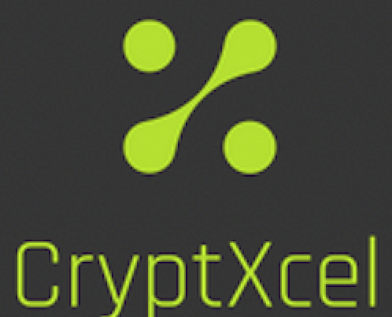

Insights and Guidance: CryptXcel FAQ
Explore quick answers and insights into CryptXcel – your go-to resource for seamlessly integrating cryptocurrency price data into Microsoft Excel. Whether you're a new user or an enthusiast, streamline your experience and troubleshoot with our concise FAQs.
Q : What are the Excel file extensions supported by CryptXcel?
A : CryptXcel supports .xlsx and .xlsm Excel file formats.
Q : Can I use CryptXcel on any Excel for Mac app versions?
A : CryptXcel works perfectly on any paid or unpaid subscription-based Excel for Mac app versions such as Microsoft 365 for Mac and Office for Mac.
Q : I created a sheet name with CryptXcel and some of the data in Excel showed incomprehensible values such as, 3.51576E+11 or -1.02152E-7. How do I fix this?
A : When the length of a number is more than 11 digits, Excel's formatting displays it in scientific notation. To make it readable, select the entire sheet name with Command-A, right click on the mouse, choose Number and press OK.
Q : What are the Mac OS system requirements for CryptXcel?
A : Both Intel and M1 platforms for Mac OS Catalina, Big Sur, Monterey, Ventura and Sonoma.
Q : With CoinMarketCap Full Mode, I want data to be priced in 4 fiat currencies and 2 cryptocurrencies with one click of "GENERATE". Will that be considered as 1 API call request?
A : CoinMarketCap API call requests and credit count are determined by :
- The number of coins selected.
- Each currency paired with its respective created sheet name will constitute as 1 API call request. Assuming the coin limit set is less than 200 coins, that will imply 6 API call requests or 6 credit counts.
Q : I want to retrieve the price of a shitcoin ranked above 5000 but Coingecko Full Mode only retrieves 1000 coins and CoinMarketCap Full Mode has a 5000 coin limit. Please help.
A : You may want to re-evaluate your portfolio management strategy with regards to shitcoinery. Alternatively, CryptXcel's Basic Modes are able to extract data for any existing and fully functioning coin project by using Coingecko's coin ID system or entering the coin symbol for CoinMarketCap.
Q : I have a Professional API plan with CoinMarketCap and rely a great deal on the market data endpoints offered. Will this be featured in future CryptXcel app updates?
A : CryptXcel currently uses market data endpoints and query parameters based on CoinMarketCap's API BASIC plan. For other tiered pricing API plans with market data endpoint features, their respective query parameters can be added into CryptXcel's Data Fields window.
Damaged Battery Inc. offers a one-off app build version with customizable endpoints and its query parameters, exclusively for each user's needs. For more details and feasibility of a custom app job, please provide the following and get in touch for a price quote.
- The current CoinMarketCap API subscription plan.
- The market data endpoints required.
- The query parameters to be inserted into the Data Fields window.

Copyright © 2021-2024 Damaged Battery Inc. All rights reserved. CryptXcel® and Damaged Battery Inc are registered trademarks.
Other names may be trademarks of their respective companies. Specifications and availability are subject to change.